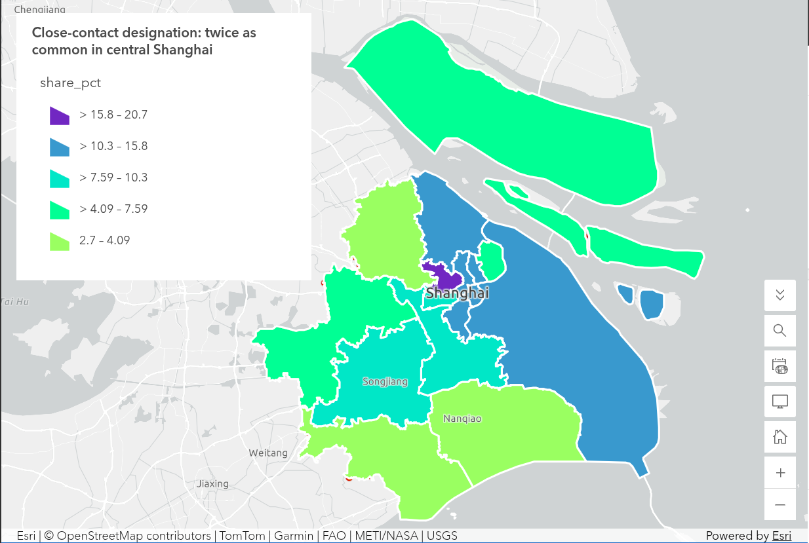

Problem Set 1 · October 2026
Close-contact designation during the 2022 Shanghai lockdown: twice as common in central Shanghai
The question
Among 2,795 geocoded respondents, was the share designated as a COVID-19 close contact higher in the seven central districts than in the nine outer districts?
The data
The 2022 Shanghai Lockdown Survey is a purposive online sample, weighted toward roughly 200 respondents per district. Because of this, respondent counts reflect the recruitment quota, not actual population density. The boundaries come from the LAB04_shanghai-districts.geojson file. Of the 3,348 total rows, we dropped 553 respondents because their addresses were never geocoded (missing coordinates). The outcome variable (whether the respondent was designated a close contact since March 2022) had zero missing values.
The method
I loaded the survey CSV and the district GeoJSON into Python, reprojecting both to EPSG:32651 (UTM Zone 51N) for accurate spatial measurement. Using GeoPandas, I ran a point-in-polygon spatial join to assign every respondent to the district polygon they lived inside. I grouped the 1,081 people in the seven central districts against the 1,714 in the nine outer districts. I calculated the share who answered "yes" to being a close contact, applied a rough margin of error, and published the aggregated district rates to ArcGIS Online.
The map

What I found
Groups were defined by point-in-polygon into EPSG:32651 districts. The difference held its direction and size across four sensitivity checks (using reported district codes, dropping shared coordinates, and dropping small districts), so it is reported as a robust finding within the limits of this sample.
Among the 2,795 geocoded respondents, 14.1% of those in the seven central districts reported being designated a close contact, against 8.1% in the nine outer districts. The difference is +6.0 points. The rough margins are ±2.1 and ±1.3, meaning the two ranges do not overlap. The map reveals a gradient: Putuo is the highest (20.8%), while far outer edges like Jinshan (2.7%) and Fengxian (2.8%) are the lowest. Pudong (12.9%) behaves more like a central district than an outer one.
What this does not show
- A random sample. The survey is unweighted and purposive; dropping the 553 ungeocoded respondents (who differ in depression rates from the geocoded group) likely biases the sample.
- The exact cause. The gap reflects either density or more aggressive testing and tracing in central districts. The survey cannot separate the two.
AI-usage disclosure
AI-assisted in checking the Python spatial join script. I ran the analysis, verified the group totals (n=1,081 and n=1,714) and chose the final sensitivity checks. The interpretation and presentation are my own.
← Back to all labs